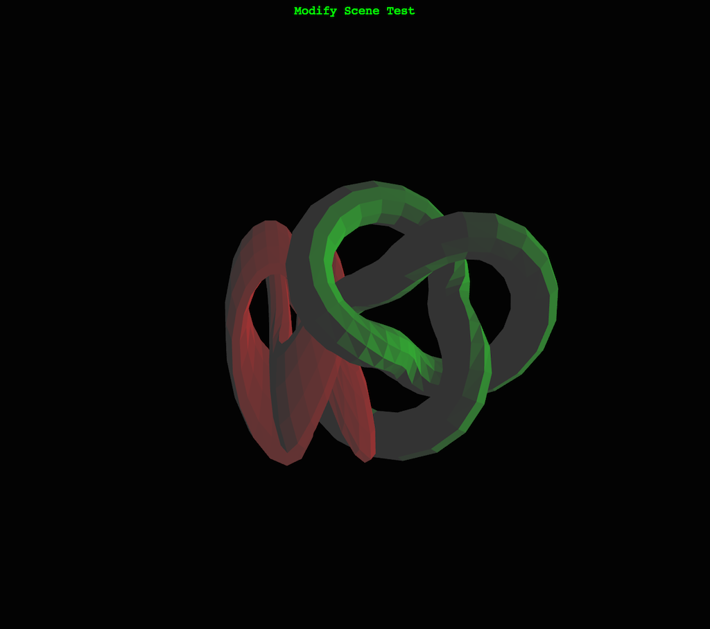
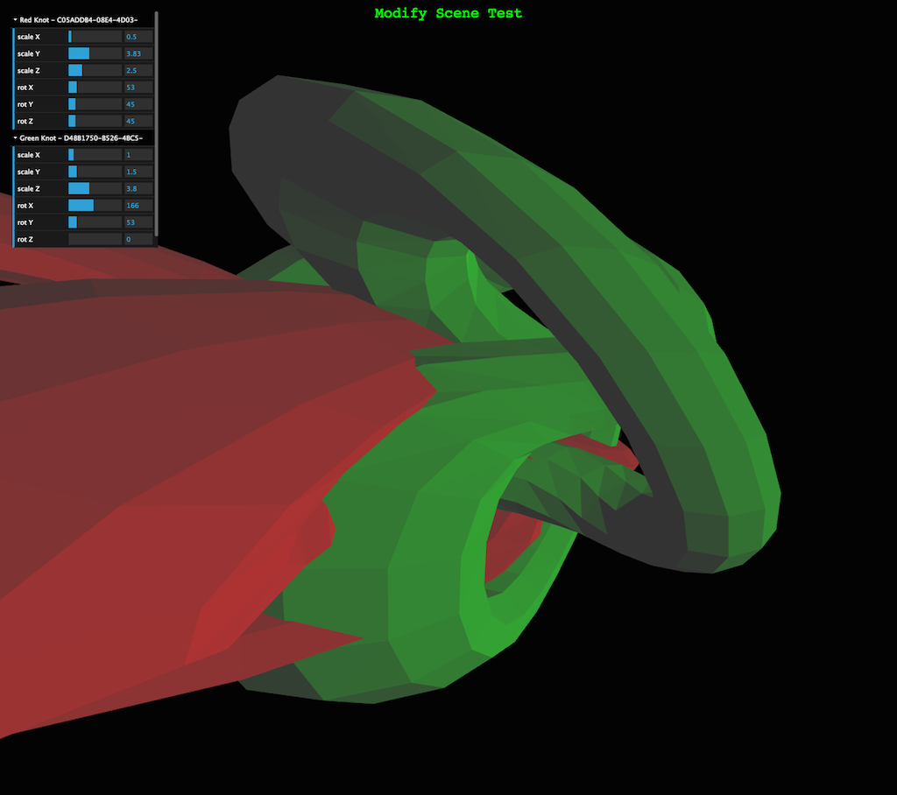

amui - Add Manipulator UI
The idea behind this experiment it to let you add manipulator UI (rotation and scale currently) to any three.js scene in your browser using a JavaScript bookmarklet.
Concept:
- Inject a copy of the dat.GUI script dynamically
- Find the root 'scene' node, iterate over it and create UI for each existing THREE.Mesh that lets you modify scale and rotation in X,Y,Z for each.
Suggested usage:
- The idea of bookmarklets is new to me but this approach seems to work well.
- Create a bookmark in your browser bookmark tool bar, name it and change the URL to this:
javascript:(function(){var s=document.createElement('script');s.src='http://callum.com/apps/amui/amui.js';document.body.appendChild(s);})();
- Visit a page containing a three.js scene - some examples:
- Trigger the bookmark
- Interact and scale/rotate things or report a bug :)
Screen shots before and after:


Notes:
- Names of folders in dat.GUI have to be unique so I append the node UUID to the name
- Most examples don't name the mesh nodes so all you see is a UUID.
- Folders are opened by default - maybe that's not good.
Future ideas:
- Allow modification of other properties like position, materials etc.
- Better ranges for settings - e.g. scale of 0...10 is purely arbitrary
- Lots more stuff...
Issues:
- There has to be a element in the page to attach to
- A UI entry is created for each mesh in the scene so if there are lots, there is going to be a lot of UI. Should probably filter what's added by a regex pattern or something.
- Currently, the dat.GUI is created top right corner which can interfere with existing instances.
- I've only tested it on Chrome - ought to work on other browsers too I imagine.
- UI is not updated with scale/rotation if scene is changing it itself
- Some examples (Stemkoski ones) use https and force a script permissions problem (see console)
This is a early proof of concept - feedback, suggestions and pull requests very welcome.
Callum.
2014-02-19